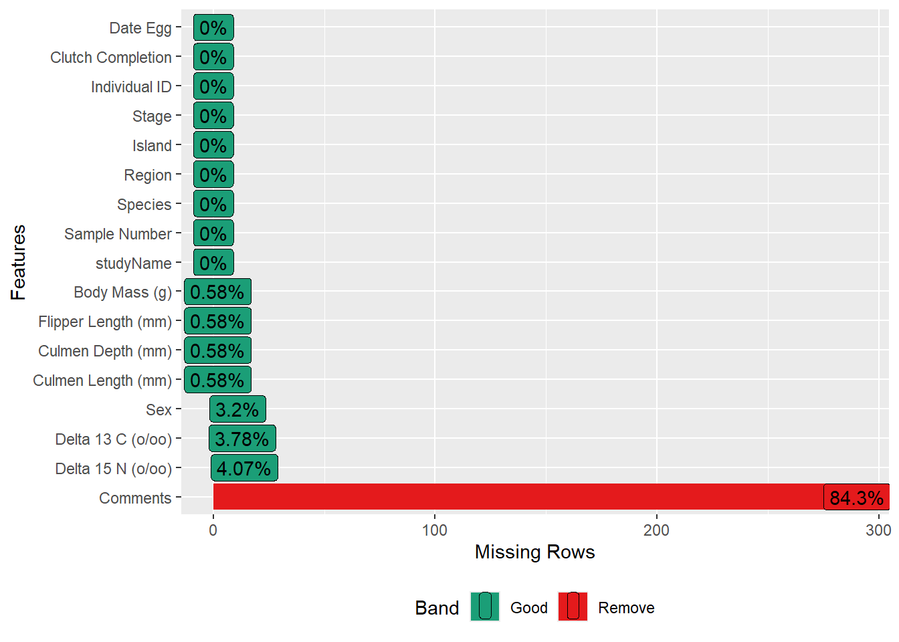
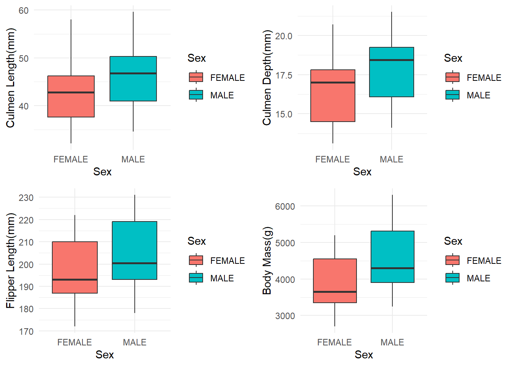
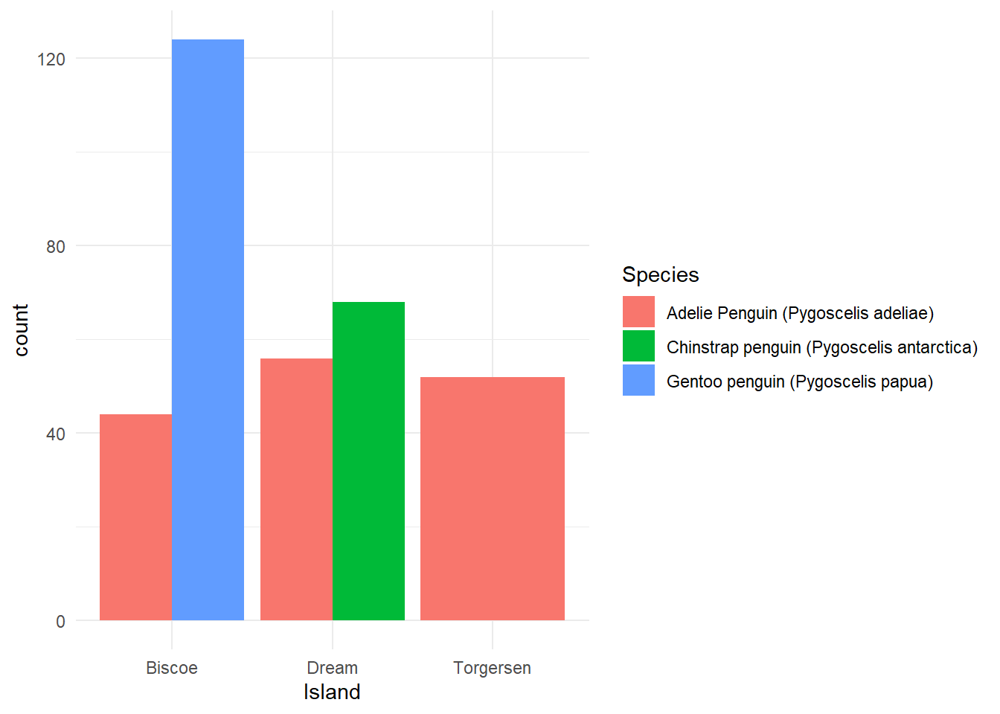

library(palmerpenguins)
library(dplyr)
library(ggplot2)
library(Hmisc)
theme_set(theme_minimal())HW1
Summary Staistic
latex(describe(penguins_raw), file = "", caption.placement = "top")Missing Values
library(Hmisc)
library(DataExplorer)
plot_missing(penguins_raw)
Note that the variable “Comment” is additional information for certain situations causing the missing values, we can just ignore it.
We also notice that missing values can be roughly categorized into three situations as follows:
Missing body measurements : includes culmen length, culmen depth, flipper length and body mass.
Missing blood isotope measurement : missing delta 15 N or both delta 15 N and delta 13 C.
Missing gender info.
When situation 1 occurs, situation 2 and 3 will also occur. (Comment: Adult not sampled.)
mypenguins <- penguins_raw[,-17]Male v.s.Female: Body Measurement
Table1
library(tidyverse)
library(table1)
pen_table<- mypenguins%>%
drop_na(Sex)%>%
`names<-`(replace(names(.),1:16,gsub(" ", "_",names(.),
fixed = TRUE)))%>%
`names<-`(replace(names(.),c(10,11,12,13,15,16),
c('Culmen_Length','Culmen_Depth',
'Flipper_Length','Body_Mass',
'Delta_15_N','Delta_13_C')))
table1(~ Culmen_Length+Culmen_Depth+Flipper_Length+Body_Mass|Sex,pen_table)| FEMALE (N=165) |
MALE (N=168) |
Overall (N=333) |
|
|---|---|---|---|
| Culmen_Length | |||
| Mean (SD) | 42.1 (4.90) | 45.9 (5.37) | 44.0 (5.47) |
| Median [Min, Max] | 42.8 [32.1, 58.0] | 46.8 [34.6, 59.6] | 44.5 [32.1, 59.6] |
| Culmen_Depth | |||
| Mean (SD) | 16.4 (1.80) | 17.9 (1.86) | 17.2 (1.97) |
| Median [Min, Max] | 17.0 [13.1, 20.7] | 18.5 [14.1, 21.5] | 17.3 [13.1, 21.5] |
| Flipper_Length | |||
| Mean (SD) | 197 (12.5) | 205 (14.5) | 201 (14.0) |
| Median [Min, Max] | 193 [172, 222] | 201 [178, 231] | 197 [172, 231] |
| Body_Mass | |||
| Mean (SD) | 3860 (666) | 4550 (788) | 4210 (805) |
| Median [Min, Max] | 3650 [2700, 5200] | 4300 [3250, 6300] | 4050 [2700, 6300] |
Graph
library(ggplot2)
library(gridExtra)
library(gapminder)
library(dplyr)
p1 <- ggplot(pen_table,aes(x = Sex,
y = Culmen_Length,fill = Sex)) +
geom_boxplot() +
scale_y_continuous(name = "Culmen Length(mm)") +
scale_x_discrete( name = "Sex")
p2 <- ggplot(pen_table,aes(x = Sex,
y = Culmen_Depth,fill = Sex)) +
geom_boxplot() +
scale_y_continuous(name = "Culmen Depth(mm)") +
scale_x_discrete( name = "Sex")
p3 <- ggplot(pen_table,aes(x = Sex,
y = Flipper_Length,fill = Sex)) +
geom_boxplot() +
scale_y_continuous(name = "Flipper Length(mm)") +
scale_x_discrete( name = "Sex")
p4 <- ggplot(pen_table,aes(x = Sex,
y = Body_Mass,fill = Sex)) +
geom_boxplot() +
scale_y_continuous(name = "Body Mass(g)") +
scale_x_discrete( name = "Sex")
grid.arrange(p1,p2,p3,p4,
ncol = 2, nrow = 2)
Species v.s. Island
p <- ggplot(data = mypenguins) +
geom_bar(mapping = aes(x = Island,fill = Species),position = "dodge")
p